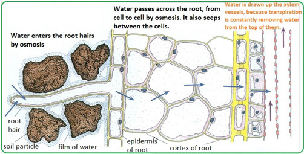

By the end of this lesson, you should be able to:

Water uptake by roots
Root hair cells absorb water from the soil by osmosis. Mineral salts are absorbed by active transport. Water and mineral salts then move through the cortex of the root to the xylem by three different pathways: apoplast, vacuolar and symplast pathways. Water is then transported up the xylem of the stem to the leaves by root pressure and suction pressure. The cohesive and adhesive forces of water molecules help to maintain a continuous column of water in the xylem vessels, allowing water to flow up the xylem by capillary action. Once in the leaf, water moves through the leaf cells by osmosis and excess is eventually lost to the atmosphere through the stomata, by transpiration.